A plotting function aimed at automating some common visualization tasks in order to ease data exploration.
Usage
splot(y, data = NULL, su = NULL, type = "", split = "median",
levels = list(), sort = NULL, error = "standard",
error.color = "#585858", error.lwd = 2, lim = 9, lines = TRUE, ...,
colors = "pastel", colorby = NULL, colorby.leg = TRUE,
color.lock = FALSE, color.offset = 1.1, color.summary = "mean",
opacity = 1, dark = getOption("splot.dark", FALSE), x = NULL,
by = NULL, between = NULL, cov = NULL, line.type = "l",
mv.scale = "none", mv.as.x = FALSE, save = FALSE, format = cairo_pdf,
dims = dev.size(), file.name = "splot", myl = NULL, mxl = NULL,
autori = TRUE, xlas = 0, ylas = 1, xaxis = TRUE, yaxis = TRUE,
breaks = "sturges", density.fill = TRUE, density.opacity = 0.4,
density.args = list(), leg = "outside", lpos = "auto", lvn = TRUE,
leg.title = TRUE, leg.args = list(), title = TRUE, labx = TRUE,
laby = TRUE, lty = TRUE, lwd = 2, sub = TRUE, ndisp = TRUE,
note = TRUE, font = c(title = 2, sud = 1, leg = 1, leg.title = 2, note =
3), cex = c(title = 1.5, sud = 0.9, leg = 0.9, note = 0.7, points = 1),
sud = TRUE, labels = TRUE, labels.filter = "_", labels.trim = 20,
points = TRUE, points.first = TRUE, byx = TRUE, drop = c(x = TRUE, by
= TRUE, bet = TRUE), prat = c(1, 1), check.height = TRUE,
model = FALSE, options = NULL, add = NULL)Arguments
- y
a formula (see note), or the primary variable(s) to be shown on the y axis (unless
xis not specified). When not a formula, this can be one or more variables as objects, or names indata.- data
a
data.frameto pull variables from. If variables aren't found indata, they will be looked for in the environment.- su
a subset to all variables, applied after they are all retrieved from
dataor the environment.- type
determines the type of plot to make, between
"bar","line","density", or"scatter". If"density",xis ignored. Anything including the first letter of each is accepted (e.g.,type='l').- split
how to split any continuous variables (those with more than
limlevels as factors). Default is"median", with"mean","standard deviation","quantile", or numbers as options. If numbers, the variable is either cut at each value in a vector, or broken into roughly equal chunks. Entering an integer (e.g.,split = 3L) that is greater than 1 will force splitting into segments. Otherwise variables will be split by value if you enter a single value for split and there are at least two data less than or equal to and greater than the split, or if you enter more than 1 value for split. If a numeric split is not compatible with splitting by value or segment, splitting will default to the median.- levels
a list with entries corresponding to variable names, used to rename and/or reorder factor levels. To reorder a factor, enter a vector of either numbers or existing level names in the new order (e.g.,
levels =list(var =c(3,2,1))). To rename levels of a factor, enter a character vector the same length as the number of levels. To rename and reorder, enter a list, with names as the first entry, and order as the second entry (e.g.,levels =list(var =list(c('a','b','c'),c(3,2,1)))). This happens after variables are split, so names and orders should correspond to the new split levels of split variables. For example, if a continuous variable is median split, it now has two levels ('Under Median' and 'Over Median'), which are the levels reordering or renaming would apply to. Multiple variables entered asycan be renamed and sorted with an entry titled'mv'.- sort
specified the order of character or factor
xlevels. By default, character or factorxlevels are sorted alphabetically.FALSEwill prevent this (preserving entered order).TRUEor'd'will sort by levels ofyin decreasing order, and anything else will sort in increasing order.- error
string; sets the type of error bars to show in bar or line plots, or turns them off. If
FALSE, no error bars will be shown. Otherwise, the default is"standard error"('^s'), with"confidence intervals"(anything else) as an option.- error.color
color of the error bars. Default is
'#585858'.- error.lwd
line weight of error bars. Default is 2.
- lim
numeric; checked against the number of factor levels of each variable. Used to decide which variables should be split, which colors to use, and when to turn off the legend. Default is
9. If set over20,limis treated as infinite (set toInf).- lines
logical or a string specifying the type of lines to be drawn in scatter plots. By default (and whenever
covis not missing, or iflinesmatches'^li|^lm|^st'), a prediction line is fitted withlm. For (potentially) bendy lines,'loess'(matching'^loe|^po|^cu') will useloess, and'spline'('^sm|^sp|^in') will usesmooth.spline. Ifyis not numeric and has only 2 levels,'probability'('^pr|^log') will draw probabilities estimated by a logistic regression (glm(y ~x, binomial)).'connected'('^e|^co|^d') will draw lines connecting all points, andFALSEwill not draw any lines.- ...
passes additional arguments to
parorlegend. Arguments before this can be named partially; those after must by fully named.- colors
sets a color theme or manually specifies colors. Default theme is
"pastel", with"dark"and"bright"as options; these are passed tosplot.color. If set to"grey", or ifbyhas more than 9 levels, a grey scale is calculated usinggray. See thecolparameter inparfor acceptable manual inputs. To set text and axis colors,colsets outside texts (title, sud, labx, laby, and note),col.suborcol.mainsets the frame titles, andcol.axissets the axis text and line colors. To set the color of error bars, useerror.color. For histograms, a vector of two colors would apply to the density line and bars separately (e.g., forcolor =c('red','green'), the density line would be red and the histogram bars would be green). See thecolor.lockandcolor.offsetarguments for more color controls.- colorby
a variable or list of arguments used to set colors and the legend, alternatively to
by. Ifbyis not missing,colorbywill be reduced to only the unique combinations ofbyandcolorby. For example, ifbyis a participant ID with multiple observations per participant, andbyis a condition ID which is the same for all observations from a given participant,colorbywould assign a single color to each participant based on their condition. A list will be treated as a call tosplot.color, so arguments can be entered positionally or by name. Data entered directly into splot can be accessed by position name preceded by a period. For example,splot(rnorm(100),colorby=.y)would draw a histogram, with bars colored by the value ofy(rnorm(100)in this case).- colorby.leg
logical; if
FALSE, a legend forcolorbyis never drawn. Otherwise, a legend forcolorbywill be drawn if there is no specifiedby, or for non-scatter plots (overwriting the usual legend).- color.lock
logical; if
FALSE, colors will not be adjusted to offset lines from points or histogram bars.- color.offset
how much points or histogram bars should be offset from the initial color used for lines. Default is 1.1; values greater than 1 lighten, and less than 1 darken.
- color.summary
specifies the function used to collapse multiple colors for a single display. Either a string matching one of
'mean'(which usessplot.colormeanto average RGB values),'median'( which treats codes as ordered, and selects that at the rounded median), or'mode'(which selects the most common code), or a function which takes color codes in its first argument, and outputs a single color code as a character.- opacity
a number between 0 and 1; sets the opacity of points, lines, and bars. Semi-opaque lines will sometimes not be displayed in the plot window, but will show up when the plot is written to a file.
- dark
logical; if
TRUE, sets text and axis colors to"white". Defaults to thesplot.darkoption.- x
secondary variable, to be shown in on the x axis. If not specified,
typewill be set to'density'. Ifxis a factor or vector of characters, or has fewer thanlimlevels when treated as a factor,typewill be set to'line'unless specified.- by
the 'splitting' variable within each plot, by which the plotted values of
xandywill be grouped.- between
a single object or name, or two in a vector (e.g.,
c(b1, b2)), the levels of which will determine the number of plot windows to be shown at once (the cells in a matrix of plots; levels of the first variable as rows, and levels of the second as columns).- cov
additional variables used for adjustment. Bar and line plots include all
covvariables in their regression models (vialm, e.g.,lm(y ~ 0 + x + cov1 + cov2)) as covariates. Scatter plots with lines include allcovvariables in the regression model to adjust the prediction line (e.g.,lm(y ~ x + x^2)).paroptionscol,mfrow,oma,mar,mgp,font.main,cex.main,font.lab,tcl,pch,lwd, andxpdare all set within the function, but will be overwritten if they are included in the call. For example,colsets font colors in this case (as opposed tocolorswhich sets line and point colors). The default is'#303030'for a nice dark grey, but maybe you want to lighten that up:col='#606060'. After arguments have been applied topar, if any have not been used and match alegendargument, these will be applied tolegend.- line.type
a character setting the style of line (e.g., with points at joints) to be drawn in line plots. Default is
'b'iferrorisFALSE, and'l'otherwise. See thelineargument ofplot.defaultfor options.line.type='c'can look nice when there aren't a lot of overlapping error bars.- mv.scale
determines whether to center and scale multiple
yvariables. Does not center or scale by default. Anything other than'none'will mean center each numericyvariable. Anything matching'^t|z|sc'will also scale.- mv.as.x
logical; if
TRUE, variable names are displayed on the x axis, andxis treated asby.- save
logical; if
TRUE, an image of the plot is saved to the current working directory.- format
the type of file to save plots as. Default is
cairo_pdf; seeDevicesfor options.- dims
a vector of 2 values (
c(width, height)) specifying the dimensions of a plot to save in inches or pixels depending onformat. Defaults to the dimensions of the plot window.- file.name
a string with the name of the file to be save (excluding the extension, as this is added depending on
format).- myl
sets the range of the y axis (
ylimofplotorbarplot). If not specified, this will be calculated from the data.- mxl
sets the range of the x axis (
xlimofplot). If not specified, this will be calculated from the data.- autori
logical; if
FALSE, the origin of plotted bars will be set to 0. Otherwise, bars are adjusted such that they extend to the bottom of the y axis.- xlas, ylas
numeric; sets the orientation of the x- and y-axis labels. See
par.- xaxis, yaxis
logical; if
FALSE, the axis will not be drawn.- breaks
determines the width of histogram bars. See
hist.- density.fill
logical;
FALSEwill turn off polygon fills when they are displayed,TRUEwill replace histograms with polygons.- density.opacity
opacity of the density polygons, between 0 and 1.
- density.args
list of arguments to be passed to
density.- leg
sets the legend inside or outside the plot frames (when a character matching
'^i', or a character matching'^o'or a number respectively), or turns it off (whenFALSE). When inside, a legend is drawn in each plot frame. When outside, a single legend is drawn either to the right of all plot frames, or within an empty plot frame. By default, this will be determined automatically, tending to set legends outside when there are multiple levels ofbetween. A number will try and set the legend in an empty frame within the grid of plot frames. If there are no empty frames, the legend will just go to the side as ifleg='outside'.- lpos
sets the position of the legend within its frame (whether inside or outside of the plot frames) based on keywords (see
legend. By default, when the legend is outside,lposis either'right'when the legend is in a right-hand column, or'center'when in an empty plot frame. When the legend is inside andlposis not specified, the legend will be placed automatically based on the data. Set to'place'to manually place the legend; clicking the plot frame will set the top left corner of the legend.- lvn
level variable name. Logical: if
FALSE, the names of by and between variables will not be shown before their level (e.g., for a sex variable with a "female" level, "sex: female" would become "female" above each plot window).- leg.title
sets the title of the legend (which is the by variable name by default), or turns it off with
FALSE.- leg.args
a list passing arguments to the
legendcall.- title
logical or a character: if
FALSE, the main title is turned off. If a character, this will be shown as the main title.- labx, laby
logical or a character: if
FALSE, the label on the x axis is turned off. If a character, this will be shown as the axis label.- lty
logical or a vector: if
FALSE, lines are always solid. If a vector, changes line type based on each value. Otherwise loops through available line types, seepar.- lwd
numeric; sets the weight of lines in line, density, and scatter plots. Default is 2. See
par.- sub
affects the small title above each plot showing
betweenlevels; text replaces it, andFALSEturns it off.- ndisp
logical; if
FALSE, n per level is no longer displayed in the subheadings.- note
logical; if
FALSE, the note at the bottom about splits and/or lines or error bars is turned off.- font
named numeric vector:
c(title,sud,leg,leg.title,note). Sets the font of the title, su display, legend levels and title, and note. In addition,font.labsets the x and y label font,font.subsets the font of the little title in each panel,font.axissets the axis label font, andfont.mainsets the between level/n heading font; these are passed topar. See the input section.- cex
named numeric vector:
c(title,sud,leg,note,points). Sets the font size of the title, su display, legend, note, and points. In addition,cex.labsets the x and y label size,cex.subsets the size of the little title in each panel,cex.axissets the axis label size, andcex.mainsets the between level/n heading size; these are passed topar. See the input section.- sud
affects the heading for subset and covariates/line adjustments (su display); text replaces it, and
FALSEturns it off.- labels
logical; if
FALSE, sets all settable text surrounding the plot toFALSE(just so you don't have to set all of them if you want a clean frame).- labels.filter
a regular expression string to be replaced in label texts with a blank space. Default is
'_', so underscores appearing in the text of labels are replace with blank spaces. Set toFALSEto prevent all filtering.- labels.trim
numeric or logical; the maximum length of label texts (in number of characters). Default is 20, with any longer labels being trimmed. Set to
FALSEto prevent any trimming.- points
logical; if
FALSE, the points in a scatter plot are no longer drawn.- points.first
logical; if
FALSE, points are plotted after lines are drawn in a scatter plot, placing lines behind points. This does not apply to points or lines added inadd, as that is always evaluated after the main points and lines are drawn.- byx
logical; if
TRUE(default) andbyis specified, regressions for bar or line plots compare levels ofbyfor each level ofx. This makes for more intuitive error bars when comparing levels ofbywithin a level ofx; otherwise, the model is comparing the difference between the first level ofxand each of its other levels.- drop
named logical vector:
c(x,by,bet). Specifies how levels with no data should be treated. All areTRUEby default, meaning only levels with data will be presented, and the layout ofbetweenlevels will be minimized.xonly applies to bar or line plots.byrelates to levels presented in the legend. IfbetisFALSE, the layout ofbetweenvariables will be strict, with levels ofbetween[1]as rows, and levels ofbetween[2]as columns -- if there are no data at an intersection of levels, the corresponding panel will be blank. See the input section.- prat
panel ratio, referring to the ratio between plot frames and the legend frame when the legend is out. A single number will make all panels of equal width. A vector of two numbers will adjust the ratio between plot panels and the legend panel. For example,
prat=c(3,1)makes all plot panels a relative width of 3, and the legend frame a relative width of 1.- check.height
logical; if
FALSE, the height of the plot frame will not be checked before plotting is attempted. The check tries to avoid later errors, but may prevent plotting when a plot is possible.- model
logical; if
TRUE, the summary of an interaction model will be printed. This model won't always align with what is plotted since variables may be treated differently, particularly in the case of interactions.- options
a list with named arguments, useful for setting temporary defaults if you plan on using some of the same options for multiple plots (e.g.,
opt = list(type = 'bar',colors = 'grey',bg = '#999999');splot(x ~ y,options = opt)). usequoteto include options that are to be evaluated within the function (e.g.,opt =list(su =quote(y > 0))).- add
evaluated within the function, so you can refer to the objects that are returned, to variable names (those from an entered data frame or entered as arguments), or entered data by their position, preceded by '.' (e.g.,
mod =lm(.y~.x)). Useful for adding things like lines to a plot while the parameters are still those set by the function (e.g.,add =abline(v =mean(x),xpd = FALSE)for a vertical line at the mean of x).
Value
A list containing data and settings is invisibly returned, which might be useful to check for errors.
Each of these objects can also be pulled from within add:
dat | a data.frame of processed, unsegmented data. |
cdat | a list of lists of data.frames of processed, segmented data. |
txt | a list of variable names. used mostly to pull variables from data or the environment. |
ptxt | a list of processed variable and level names. Used mostly for labeling. |
seg | a list containing segmentation information (such as levels) for each variable. |
ck | a list of settings. |
lega | a list of arguments that were or would have been passed to legend. |
fmod | an lm object if model is TRUE, and the model succeeded. |
Note
x-axis levels text
If the text of x-axis levels (those corresponding to the levels of x) are too long, they are hidden before
overlapping. To try and avoid this, by default longer texts are trimmed (dictated by labels.trim), and at some
point the orientation of level text is changed (settable with xlas), but you may still see level text missing.
To make these visible, you can reduce labels.trim from the default of 20 (or rename the levels of that variable),
make the level text vertical (xlas = 3), or expand your plot window if possible.
missing levels, lines, and/or error bars
By default (if drop = TRUE), levels of x with no data are dropped, so you may not see every level of your
variable, at all or at a level of by or between. Sometimes error bars cannot be estimated (if, say, there
is only one observation at the given level), but lines are still drawn in these cases, so you may sometimes see levels
without error bars even when error bars are turned on. Sometimes (particularly when drop['x'] is FALSE),
you might see floating error bars with no lines drawn to them, or what appear to be completely empty levels. This
happens when there is a missing level of x between two non-missing levels, potentially making an orphaned level
(if a non-missing level is surrounded by missing levels). If there are no error bars for this orphaned level, by default
nothing will be drawn to indicate it. If you set line.type to 'b' (or any other type with points), a point
will be drawn at such error-bar-less, orphaned levels.
unexpected failures
splot tries to clean up after itself in the case of an error, but you may still run into errors that break things before
this can happen. If after a failed plot you find that you're unable to make any new plots, or new plots are drawn over
old ones, you might try entering dev.off() into the console. If new plots look off (splot's
par settings didn't get reset), you may have to close the plot window to reset
par (if you're using RStudio, Plots > "Remove Plot..." or "Clear All..."), or restart R.
Input
formulas
When y is a formula (has a ~), other variables will be pulled from it:
y ~ x * by * between[1] * between[2] + cov[1] + cov[2] + cov[n]
If y has multiple variables, by is used to identify the variable (it becomes a factor with variable names
as levels), so anything entered as by is treated as between[1], between[1] is moved to
between[2], and between[2] is discarded with a message.
named vectors
Named vector arguments like font, cex, and drop can be set with a single value, positionally, or
with names. If a single value is entered (e.g., drop = FALSE), this will be applied to each level (i.e.,
c(x = FALSE, by = FALSE, bet = FALSE)). If more than one value is entered, these will be treated positionally
(e.g., cex = c(2, 1.2) would be read as c(title = 2, sud = 1.2, leg = .9, note = .7, points = 1)).
If values are named, only named values will be set, with other defaults retained (e.g., cex = c(note = 1.2)
would be read as c(title = 1.5, sud = .9, leg = .9, note = 1.2, points = 1)).
Examples
# simulating data
n <- 2000
dat <- data.frame(sapply(c("by", "bet1", "bet2"), function(c) sample(0:1, n, TRUE)))
dat$x <- with(
dat,
rnorm(n) + by * -.4 + by * bet1 * -.3 + by * bet2 *
.3 + bet1 * bet2 * .9 - .8 + rnorm(n, 0, by)
)
dat$y <- with(
dat,
x * .2 + by * .3 + bet2 * -.6 + bet1 * bet2 * .8 + x *
by * bet1 * -.5 + x * by * bet1 * bet2 * -.5
+ rnorm(n, 5) + rnorm(n, -1, .1 * x^2)
)
# looking at the distribution of y between bets split by by
splot(y, by = by, between = c(bet1, bet2), data = dat)
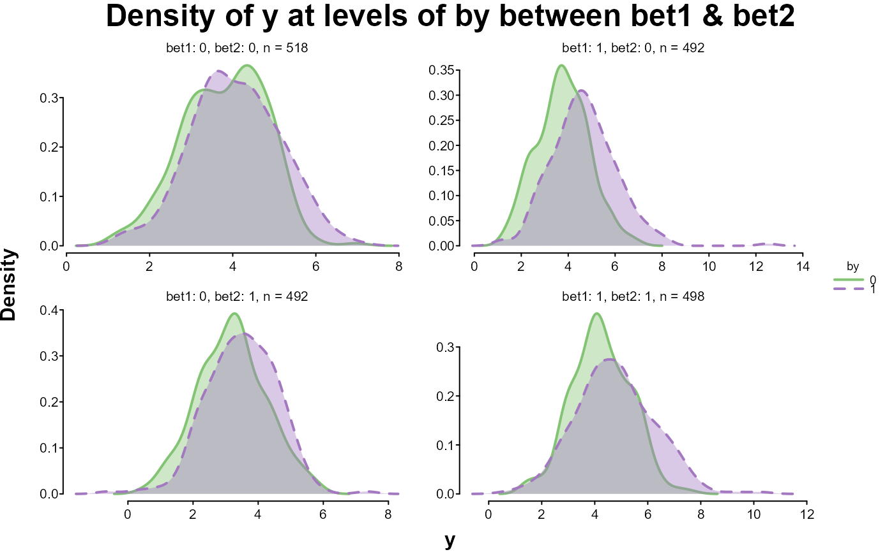
# looking at quantile splits of y in y by x
splot(y ~ x * y, dat, split = "quantile")
 # looking at y by x between bets
splot(y ~ x, dat, between = c(bet1, bet2))
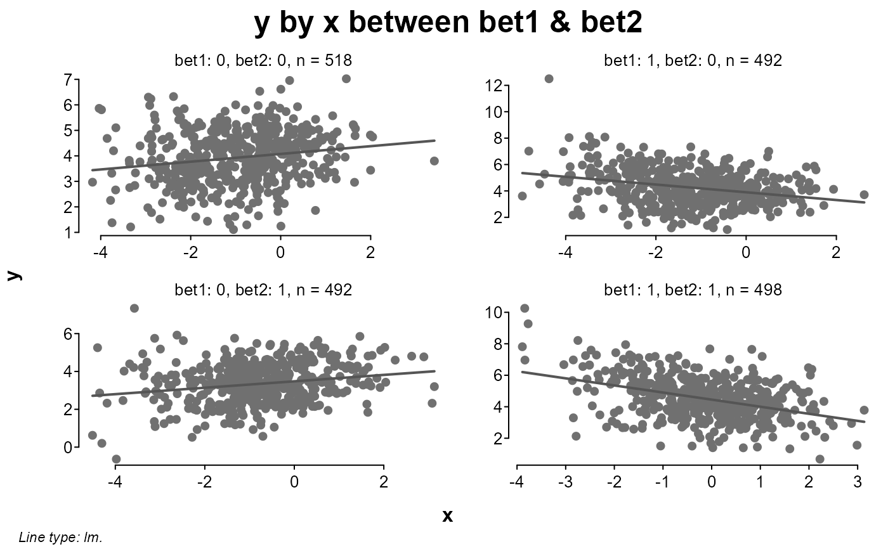
# sequentially adding levels of split
splot(y ~ x * by, dat)
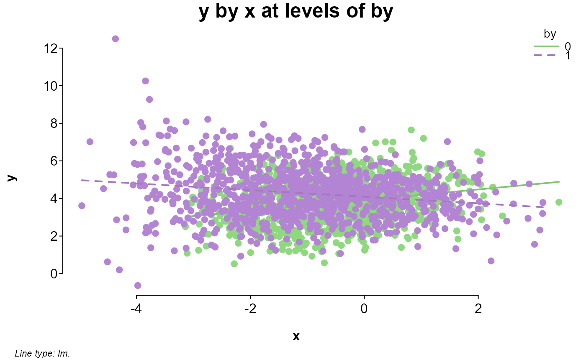
splot(y ~ x * by * bet1, dat)
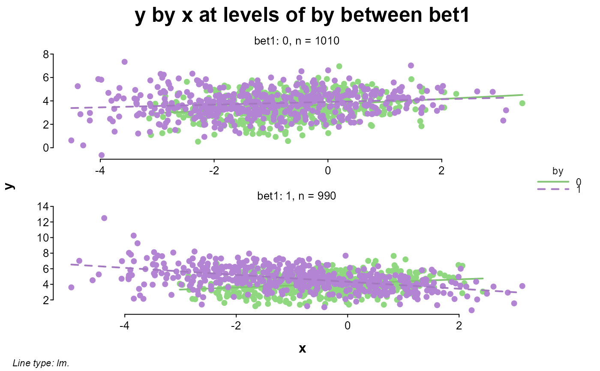
splot(y ~ x * by * bet1 * bet2, dat)
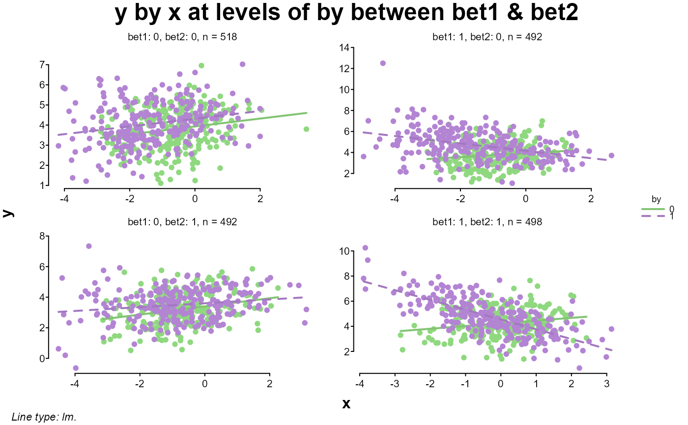
# same as the last but entered by name
splot(y, x = x, by = by, between = c(bet1, bet2), data = dat)
# zooming in on one of the windows
splot(y ~ x * by, dat, bet1 == 1 & bet2 == 0)
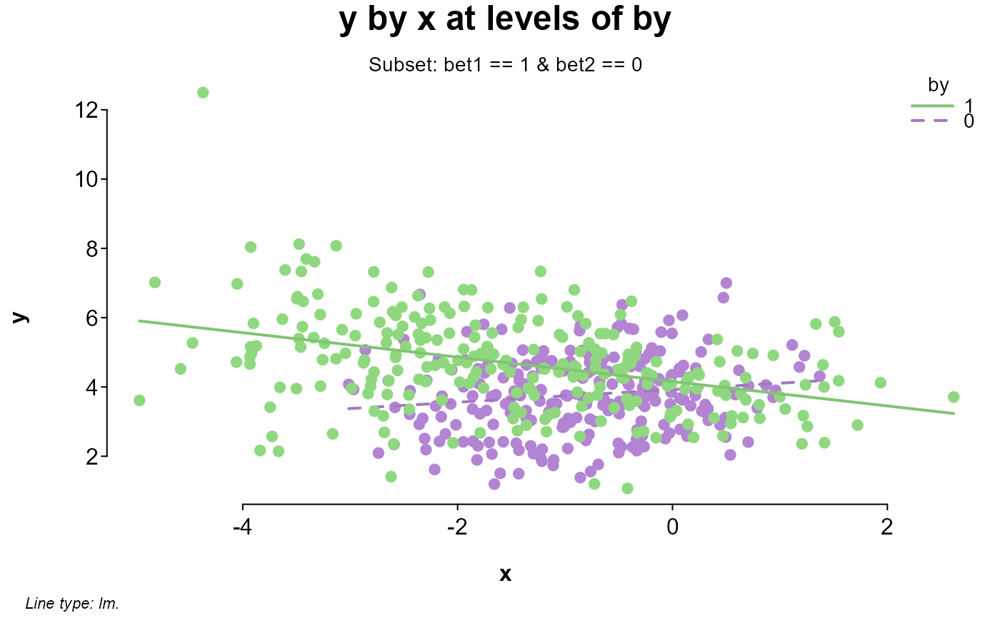
# comparing an adjusted lm prediction line with a loess line
# this could also be entered as y ~ poly(x,3)
splot(y ~ x + x^2 + x^3, dat, bet1 == 1 & bet2 == 0 & by == 1, add = {
lines(x[order(x)], loess(y ~ x)$fitted[order(x)], lty = 2)
legend("topright", c("lm", "loess"), lty = c(1, 2), lwd = c(2, 1), bty = "n")
})
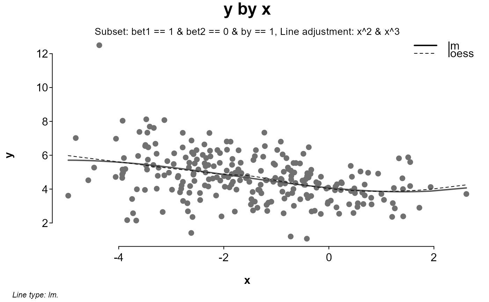
# looking at different versions of x added to y
splot(cbind(
Raw = y + x,
Sine = y + sin(x),
Cosine = y + cos(x),
Tangent = y + tan(x)
) ~ x, dat, myl = c(-10, 15), lines = "loess", laby = "y + versions of x")
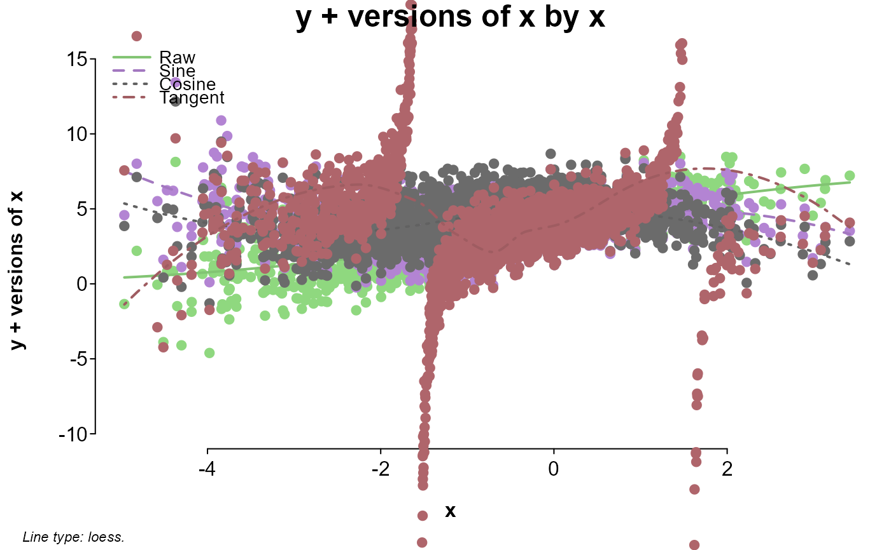
# looking at y by x between bets
splot(y ~ x, dat, between = c(bet1, bet2))
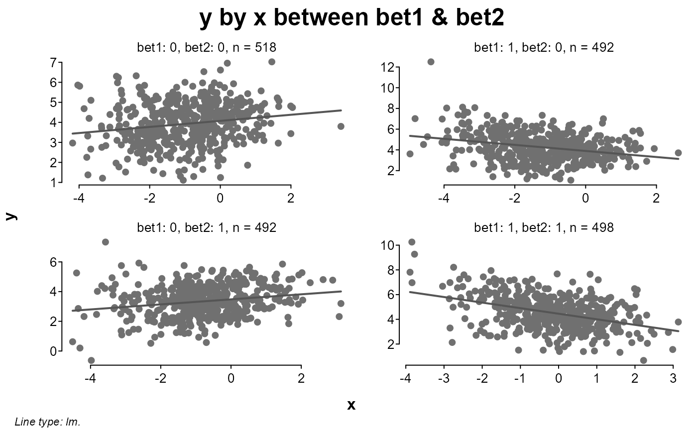
# sequentially adding levels of split
splot(y ~ x * by, dat)
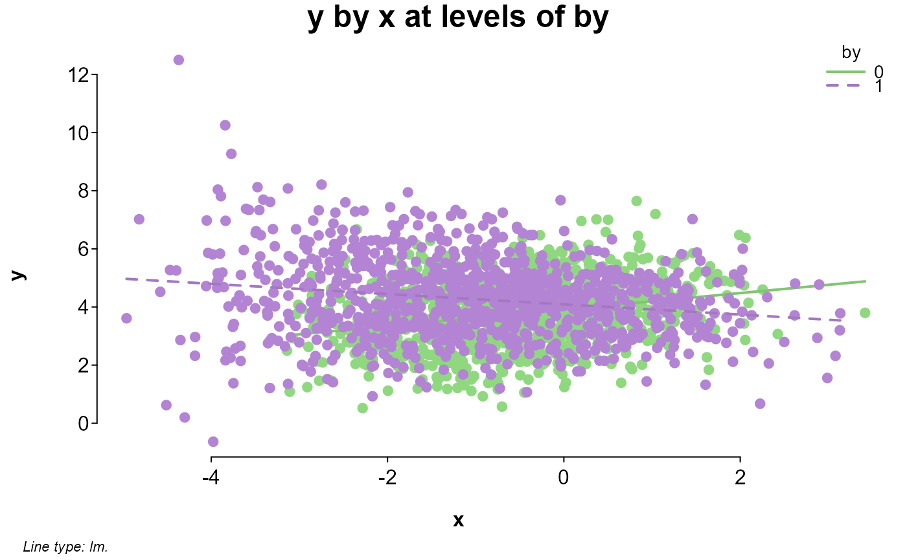
splot(y ~ x * by * bet1, dat)
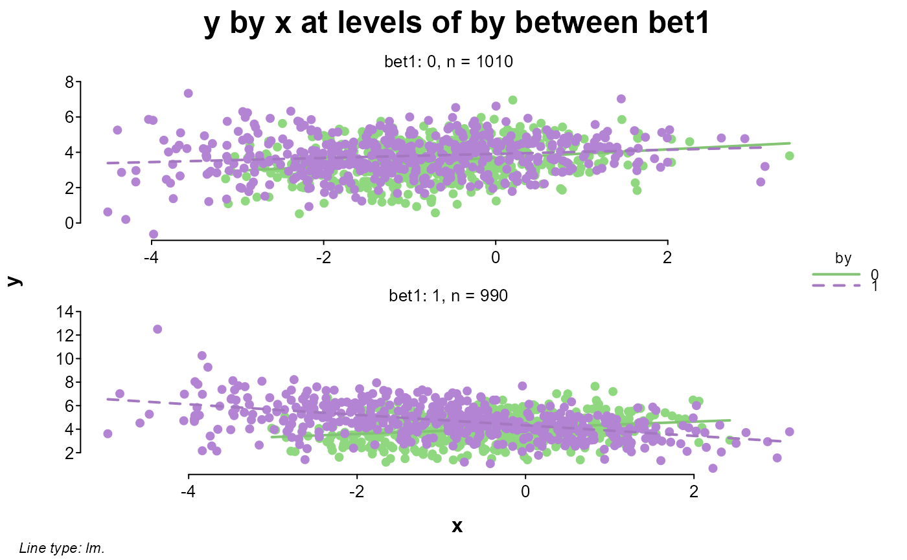
splot(y ~ x * by * bet1 * bet2, dat)
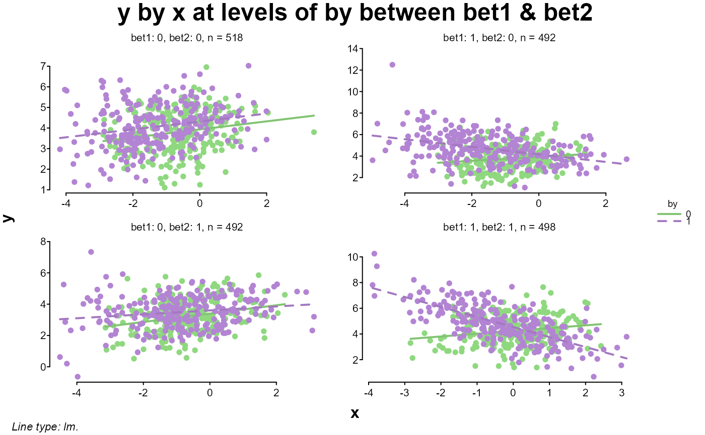
# same as the last but entered by name
splot(y, x = x, by = by, between = c(bet1, bet2), data = dat)
# zooming in on one of the windows
splot(y ~ x * by, dat, bet1 == 1 & bet2 == 0)
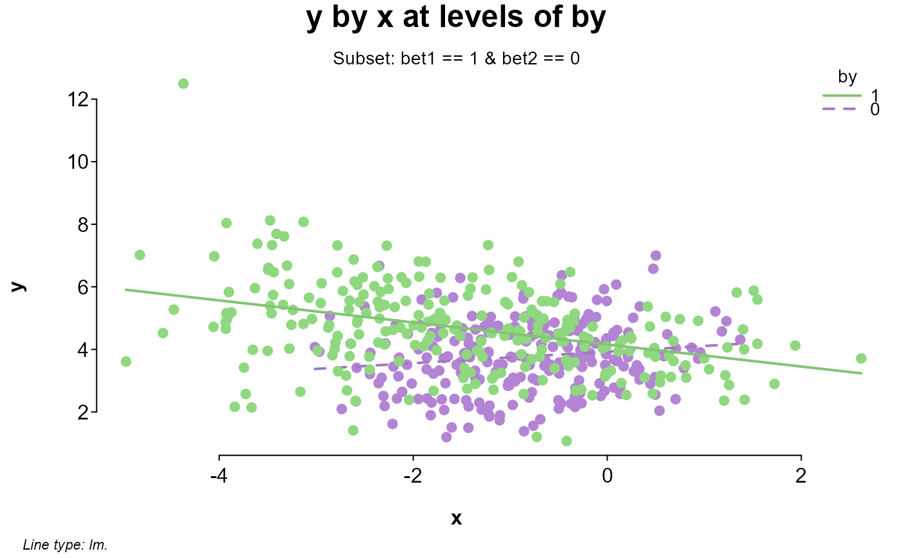
# comparing an adjusted lm prediction line with a loess line
# this could also be entered as y ~ poly(x,3)
splot(y ~ x + x^2 + x^3, dat, bet1 == 1 & bet2 == 0 & by == 1, add = {
lines(x[order(x)], loess(y ~ x)$fitted[order(x)], lty = 2)
legend("topright", c("lm", "loess"), lty = c(1, 2), lwd = c(2, 1), bty = "n")
})
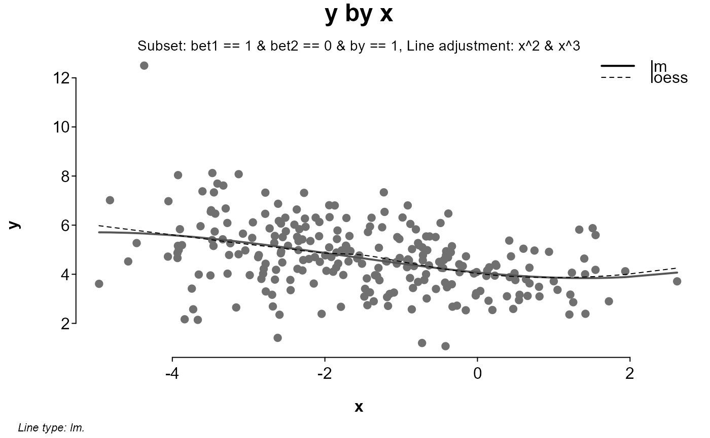
# looking at different versions of x added to y
splot(cbind(
Raw = y + x,
Sine = y + sin(x),
Cosine = y + cos(x),
Tangent = y + tan(x)
) ~ x, dat, myl = c(-10, 15), lines = "loess", laby = "y + versions of x")
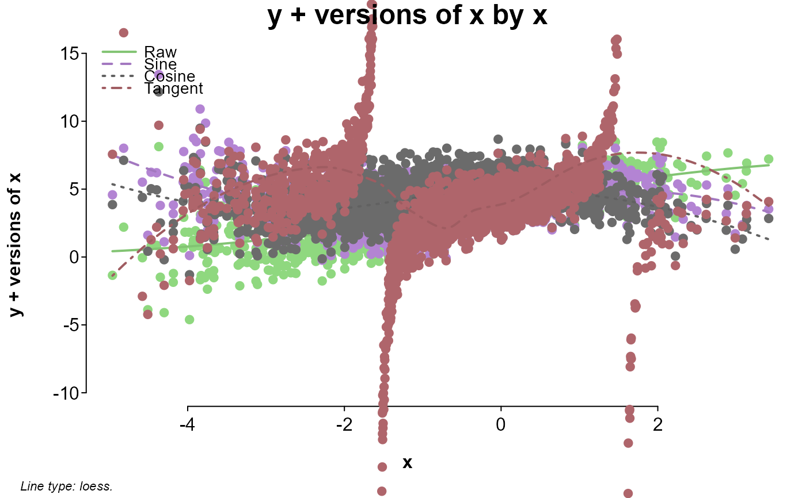